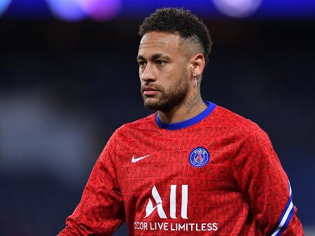

O jogo da vida
Na liga dos campeoes,na ediçao 2016/2017. houve o melhor jogo da vida de neymar, uma virada historica sobre o gigante paris-saint-germain. que contava com estrelas do futebol como Angel Di Maria, Cavani entre outras estrelas.
O jogo de ida houve o placar de 4x0 para o paris-saint-germain no Estádio Parc des Princes em paris capital da frança, sendo assim o barcelona teria que reverter o placar do jogo de ida no camp nou, estadio do barcelona.
Por conta da Regra do gol fora de casa, como o Barcelona perdeu a primeira partida na casa do adversário sem marcar nenhum gol, para a partida de volta, se sofresse um gol, o time seria obrigado a vencer por uma diferença de 5 gols para se classificar.
O Barcelona chegou a abrir 3 a 0 no confronto, ficando assim a 1 gol da igualdade no confronto, o que levaria a partida para a prorrogação. mas o Paris Saint Germain diminuiu a vantagem com um gol de Cavani.
A partir de então, o time da casa precisava de mais três tentos para avançar. Os 3 gols que a equipe necessitava saíram depois dos 85 minutos: Neymar cobrando falta aos 87 minutos e depois convertendo pênalti aos 90 minutos, e Sergi Roberto aos 93 Minutos do segundo tempo
Após marcar o gol que lhe garantiu a classificação, o sismômetro do Instituto de Ciências da Terra Jaume Almera, que fica a cerca de 500 metros do Camp Nou, detectou “um minúsculo terremoto”, que foi causado pela vibração dos torcedores. A vitória foi classificada pela imprensa como um milagre. Como conseguiu reverter o placar, o Barcelona classificou-se pela décima vez consecutiva às quartas de final da competição, feito até então nunca alcançado por outro time europeu.